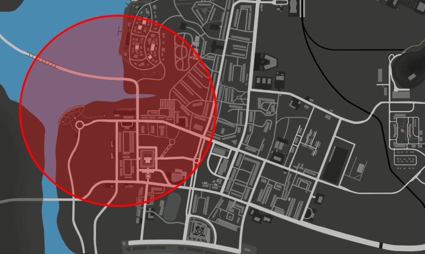
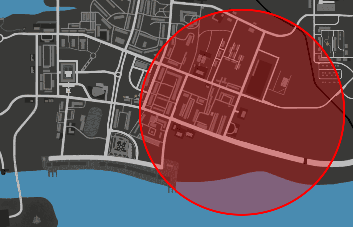
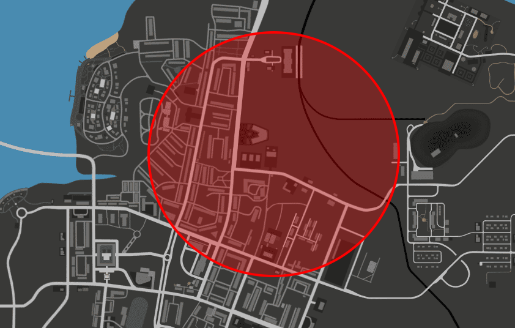
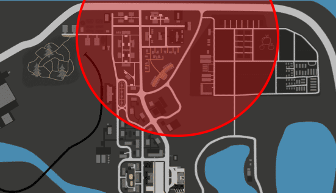

РБ
Ромэрик Банхаммер
Командир ДШР
Учебные и информационные материалы подразделения: аттестация, разминирование СВУ, первая помощь, штурм, переговоры, специальные сигналы и правила выкупа заложников.
Два этапа проверки рекрута: теория и практика.
02Типы устройств, порядок обезвреживания и отыгровки.
03Алгоритм, состояния, СЛР, ранения и кровотечения.
04Группы, терминология и тактики зачистки помещений.
05Цели, обязательные действия и запреты переговорщика.
06Специальные сигналы и нормативы сбора личного состава.
07Захват заложников, похищения и ценовая политика выкупа.
08Запреты и наказания для сотрудников — компактная шпаргалка.
Командир ДШР
Заместитель командира
Система кодов связи обновляется. Актуальные обозначения появятся здесь после утверждения.
Единая система докладов в рацию. Код строится по схеме группа-объект-состояние.
/r 2-4-1 — последняя цифра обозначает состояние, первые две — пост.
Аттестация на должность оперативника проходит в два этапа: теория и практика. Отмечайте пройденные темы — прогресс сохраняется в браузере.
Практика принимается после успешной сдачи теории.
30 случайных вопросов по пяти темам. Время — 45 минут, проходной балл — 24 из 30 (80%). Результат отправляется командиру. Тест проходится один раз: повторная попытка — только с разрешения командира.
30 случайных вопросов по пяти темам: СВУ, первая помощь, переговоры, штурм и запреты главы 4. Время — 45 минут, проходной балл — 24 из 30 (80%). Результат отправляется командиру.
Самодельные взрывные устройства: классификация, порядок обезвреживания и отыгровки действий сапёра.
СВУ кустарного изготовления.
Механические, электромеханические, дистанционные, химические.
Мины, растяжки, артиллерийские снаряды.
Пояс смертника.
/me снимает набор сапёра с разгрузки, открывает его, достаёт индикаторную отвёртку и генератор радиопомех
/me активирует генератор радиопомех, устанавливает на пол, осматривает взрывное устройство
/me откручивает крышку СВУ, прозванивает провода, находит нужный провод и перерезает его
/do СВУ обесточено.
/me снимает с разгрузки бронированный кейс, открывает его и ставит на пол
/me выкручивает из СВУ тротиловую шашку, из шашки — взрыватель, из взрывателя — капсюль
/me раскладывает компоненты СВУ по кейсам, закрывает кейсы, вешает на крепления бронежилета
/do СВУ обезврежено./me достаёт химическую защиту, надевает её
/me снимает набор сапёра с разгрузки, открывает его, достаёт индикаторную отвёртку
/me осматривает взрывное устройство, после чего откручивает крышку
/me осматривает содержимое корпуса и обнаруживает химический взрыватель
/me снимает с разгрузки бронированный кейс с песком, открывает и ставит на пол
/me выкручивает химический взрыватель из тротиловой шашки (разрешено вытащить шашку целиком)
/me раскладывает компоненты СВУ по кейсам с песком, закрывает кейсы, вешает на крепления бронежилета
/do СВУ обезврежено.Кейс с песком: песок поглощает радиацию и лучше фиксирует компоненты СВУ.
Ингибиторы химических реакций — вещества, при которых скорость реакции уменьшается или реакция прекращается. Замедляют цепные и каталитические реакции.
/me достаёт химическую защиту, надевает её
/me снимает набор сапёра с разгрузки, открывает его, достаёт индикаторную отвёртку
/me осматривает взрывное устройство, откручивает крышку
/me осматривает содержимое корпуса и находит химическую колбу с веществом
/me снимает с разгрузки бронированный кейс с песком, открывает и ставит на пол
/me достаёт из аптечки шприц и бутыль ингибитора, набирает вещество и вводит его в колбу
/me раскладывает компоненты СВУ по кейсам с песком, закрывает кейсы, вешает на крепления бронежилета
/do СВУ обезврежено./me снимает набор сапёра с разгрузки, открывает его, достаёт индикаторную отвёртку
/me осматривает взрывное устройство, откручивает крышку
/me снимает с разгрузки бронированный кейс, открывает и ставит на пол
/me выкручивает из СВУ тротиловую шашку, из шашки — взрыватель, из взрывателя — капсюль
/me раскладывает компоненты СВУ по кейсам, закрывает кейсы, вешает на крепления бронежилета
/do СВУ обезврежено./me достаёт генератор ЭМИ, устанавливает на землю и включает
/do Электромагнитные поля уничтожены.
/me снимает набор сапёра с разгрузки, открывает его, достаёт индикаторную отвёртку и кусачки
/me осматривает взрывное устройство, откручивает крышку
/me прозванивает провода, находит нужный, перекусывает его
/me снимает с разгрузки бронированный кейс, открывает и ставит на пол
/me выкручивает из СВУ тротиловую шашку, из шашки — взрыватель, из взрывателя — капсюль
/me раскладывает компоненты СВУ по кейсам, закрывает кейсы, вешает на крепления бронежилета
/do СВУ обезврежено.«C4» — самодельное взрывное устройство из тротила разной физической формы и детонатора.
/me надевает резиновые перчатки, осматривает устройство
/me снимает с разгрузки набор сапёра, достаёт индикаторную отвёртку и кусачки
/me прозванивает провода, находит нужный, перекусывает его
/do С4 обесточена.
/me снимает с разгрузки кейс, открывает его, складывает пластид, закрывает кейс и вешает на лямки бронежилета
/do С4 обезврежена./me надевает резиновые перчатки, осматривает устройство
/me снимает с разгрузки кусачки и перекусывает провод питания
/do С4 обесточена.
/me снимает с разгрузки кейс, открывает его, складывает пластид, закрывает кейс и вешает на лямки бронежилета
/do С4 обезврежена./me обхватывает рукой корпус гранаты, одновременно просовывает палец в кольцо
/do Спусковой рычаг заблокирован.
/me сжимает гранату рукой, наклоняя её в сторону натяжения, затем фиксирует усики шплинта, удерживающие чеку
/me достаёт кусачки с разгрузки и перекусывает леску
/do Растяжка обезврежена./me обхватывает рукой корпус гранаты
/do Спусковой рычаг заблокирован.
/me сжимает гранату рукой, наклоняя её в сторону натяжения
/me достаёт кусачки с разгрузки и перекусывает леску
/me достаёт чеку из разгрузки и вставляет её в гранату ИЛИ /me кидает гранату в овраг (если чеки нет)
/do Растяжка обезврежена.Одним оперативником: зафиксировать рычаг запала одной из гранат и продолжить обезвреживание второй по инструкции.
/me снимает маскирующий слой вокруг взрывателя, вставляя в отверстия штоков ударников кусок проволоки
/me снимает с разгрузки крюк, подцепляет его к мине, отходит на 50 метров, выдёргивает мину
/me, вернувшись, вывинчивает взрыватель против часовой стрелки и аккуратно откладывает мину в сторону
/do Мина обезврежена./me разгребает грунт вокруг взрывателя, не нажимая на усики или головку взрывателя
/me вставляет чеку в отверстие штока ударника
/me снимает с разгрузки крюк, подцепляет его к мине, отходит на 50 метров, выдёргивает мину
/me, вернувшись, вывинчивает взрыватель и аккуратно откладывает мину в сторону
/do Мина обезврежена./me достаёт сапёрную лопату, выкапывает яму
/me снимает с разгрузки бронированный кейс, открывает, ставит на землю, достаёт тротиловую шашку и кладёт в яму
/me достаёт с разгрузки детонатор и провода, подключает детонатор к тротиловой шашке
/me отходит на тридцать метров и ложится ногами к СВУ (/anim 69)
/me достаёт с разгрузки пульт детонатора и нажимает на кнопку
/do СВУ взорвано.Химический тип СВУ отвозится в лабораторию (ФСБ, ЕСС).
Снижает выделяемую при взрыве энергию, уменьшает разрушения и повреждения от осколков, существенно снижает риск пожаров.
Алгоритм действий, помощь при неотложных состояниях, ранениях, ожогах, переломах и кровотечениях.
Совокупность простых, целесообразных мер по охране здоровья и жизни пострадавшего от травмы или внезапно заболевшего человека. Оказывается на месте происшествия, до прихода врача или транспортировки в больницу.
Правильно оказанная первая помощь сокращает время лечения, ускоряет заживление ран и часто решает исход спасения. Оказывать её может любой человек при наличии подготовки и навыков.
Специализированная скорая медицинская помощь: врачи специализированных бригад СМП, специалисты приёмных отделений медицинских организаций.
Как правило, подразумевает эвакуацию в медицинскую организацию для неотложной или экстренной помощи наземным, воздушным, водным и другим транспортом.
Обморок — кратковременная потеря сознания из-за временного нарушения мозгового кровотока.
/me уложил аккуратно человека в горизонтальное положение, придерживая голову пострадавшего
/me снял разгрузочный жилет, сложил его и подложил под ноги пострадавшего
/me начал расстёгивать одежду и расслаблять пояс на пострадавшем
/me протянул руку к аптечке, достал нашатырь и начал водить им у носа пострадавшего
/me начал проводить проверку пульса и дыхания у человека/me начал аккуратно укладывать человека в горизонтальное положение, придерживая голову
/me достал плед из разгрузочного жилета и подложил его под голову пострадавшего
/me начал расстёгивать воротник пострадавшего
/me начал аккуратно переворачивать человека на правый бок, подкладывая левую руку ему под щёку, затем согнул левую ногу
/me начал проверку пульса и дыхания пострадавшегоСЛР — комплекс неотложных мероприятий для восстановления жизнедеятельности организма и выведения из клинической смерти. Применяется при отсутствии признаков жизни: дыхания, кровообращения (пульса), сознания.
Включает два основных мероприятия, проводимых параллельно: непрямой массаж сердца и искусственную вентиляцию лёгких. Дополнительно применяется прекардиальный удар при внезапной остановке сердца в первые 10–30 секунд.
Два способа: «изо рта в рот» и в крайнем случае «изо рта в нос».
Соотношение вдохов и нажатий — 2 к 30. Желательно использовать барьеры: от носового платка до специальных плёнок и масок из аптечки.
Отморожение — повреждение тканей при низких температурах. В первую очередь страдают уши, нос, щёки, кисти рук.
Симптомы: потеря чувствительности поражённых участков, ощущение покалывания.
Побеление кожи.
Появление волдырей.
Потемнение и отмирание кожи.
Отмирание слоёв мягких тканей вплоть до костей и суставов; поражённые участки подлежат ампутации.
Ожоги — травмы от высокотемпературного, химического, электрического или радиационного воздействия, повреждающего кожу и подлежащие ткани. Виды: термический и химический.
Часто связан с ожогом лица, но может возникать от капельного попадания химических веществ или искры.
Термический ожог:
Химический ожог: сухой ватной палочкой удалить остатки вещества; мягким тампоном, обильно смоченным раствором пищевой соды, промывать глаза 20–25 минут. Далее действовать как при термическом ожоге.
Требует медицинского вмешательства. До приезда скорой: охладить обожжённый участок, промокнуть мокрой холодной марлевой салфеткой.
Ожог 1–2 степени не требует госпитализации:
При сильных ожогах охлаждение проводят, обернув палец стерильной прохладной мокрой тканью, далее — к врачу.
Ожог руки любой степени требует медицинской помощи: площадь травмы может быть большой, возможно развитие болевого шока.
Возникает при заглатывании агрессивных химических веществ — ожог пищевода и гортани.
В первую очередь остановить кровотечение, затем продезинфицировать рану.
Кровотечение останавливают марлевым тампоном, который меняют по мере наполнения кровью. Тампон обязательно должен быть стерильным.
Пуля вошла в тело и осталась внутри.
Пуля прошла насквозь.
Пуля задела тело.
Перелом — нарушение анатомической целостности кости. Бывают закрытыми и открытыми.
Кожный покров не нарушен, выхода кости не видно. Признаки: припухлость, выступающие кости, упирающиеся в кожу, искривление конечностей.
Наиболее опасен: при повреждении кожного покрова образуется открытая рана, возможен риск инфекционного заражения крови.
Назначение — обездвижить повреждённую конечность. Шина делается из любого твёрдого удлинённого предмета: доски, палки, металлической трубки, ветки.
Виды наружных кровотечений различаются по степени опасности и источнику.
Вид внутреннего кровотечения, вызванный повреждением внутренних органов: печени, почек, лёгких и других.
Первая помощь — вызов скорой и контроль признаков жизни. Человек без медицинского образования не может оказывать помощь при этом виде кровотечения.
Очень тяжёлая травма, при отсутствии помощи может привести к летальному исходу. Самое опасное из всех видов кровотечений.
Признаки: пульсирующая струя алой крови; кровь ярко-красная; не уменьшается при обычном придавливании раны или тканей выше и ниже неё.
Возникает при поверхностных и глубоких ранениях, когда нарушается целостность подкожных или межмышечных вен.
Признаки: густая тёмная кровь; медленный поток крови из раны; уменьшается при придавливании участка ниже ранения.
Слои тампонада: стерильная салфетка → плотный слой ваты → стерильная салфетка, всё плотно завязать.
Самый частый вид наружных кровотечений. Возникает при любых травмах с нарушением целостности кожи. Проявляется неинтенсивным равномерным истечением крови из-за повреждения капилляров. Редко приводит к сильной кровопотере — чаще останавливается самостоятельно.
Признаки: ярко-красная кровь в небольшом количестве.
Общие меры: наложить стерильную повязку, поднять конечность с ранением.
Состояние входит в перечень для оказания первой помощи. При полной закупорке дыхательных путей человек не может говорить, кашлять и дышать.
Дополнено по общему перечню состояний; в оригинале отдельного раздела не было.
Правила проведения штурма, состав групп, профессиональная терминология и тактики зачистки помещений.
Разбиваются на двойки или тройки. Участники страхуют друг друга и работают сообща.
Состав: ФСБ, СО, СР.
Любое количество человек. Стоят на позициях и точках, обеспечивая охрану и безопасность. Назначает командование или главный по спецоперации.
Состав: сотрудники полиции, ВЧ.
Треть участников штурма. Делятся на группы и подгруппы, функции как у первых двух. Используются для подкрепления.
Состав: СО, СР, ВЧ, УВД, ГИБДД, внештатные сотрудники ФСБ.
4–5 оперативников. При задействовании резерва для вывода одной из первых групп обеспечивает эвакуацию всех групп при отступлении или окончании штурма.
Штурм с лёгким стрелковым вооружением, обычно со светошумовыми и газовыми гранатами. Направлен на сохранение жизни заложников и задержание преступника.
Штурм с использованием лёгкого, среднего и тяжёлого вооружения. Отличается повышенным расходом боеприпасов, проводится без учёта наличия заложников и направлен на уничтожение противника.
Штурму должна предшествовать тщательная разведка и подготовка.
При штурме стоит стараться задержать как можно больше преступников: чем больше нападавших — тем больше информации. Исключение — отбитие крупного нападения на склад ВЧ.
Применяется при короткоствольном оружии и достаточной ширине двери. Сотрудники у двери после взлома одновременно встают на колено, одной рукой держатся за косяк, другую с оружием выводят вперёд, затем одновременно входят, пригнувшись, контролируя каждый своё направление.
Недостаток: нужны достаточно широкие двери — двое в узком проёме одновременно не пройдут. Возможен последовательный вход друг за другом.
Ширина двери не важна: сотрудники входят один за другим. №1 выдвигается через проём, №2 координируется с ним. №1 в низкой стойке проникает по диагонали и проверяет мёртвую зону по ходу движения; №2 почти одновременно пересекает проём по диагонали в сторону противоположной мёртвой зоны и держится прямо, нависая над №1. Обе зоны зачищаются почти одновременно.
Уместен, когда дверь расположена около стены и бойцам приходится начинать движение с противоположной от стены стороны. Возможны два варианта — выбор делает №1, который входит первым, №2 подстраивается.
Похожа на «угол», но №1 и №2 становятся спиной к одной из стен, контролируя всё помещение каждый в своём секторе. Применяется, когда помещение последнее и группе не нужно двигаться дальше.
Цели, обязательные действия и запреты при ведении переговоров с преступниками.
Установить психологический контакт с преступниками для сохранения жизни заложников.
Узнать максимум информации за минимальное время: количество преступников, мотивы, настрой, наличие и состояние заложников.
Затягивать время для подготовки действий специальных служб.
Получить требования преступников и прийти к итогу, который устроит и власти, и преступников.
Переговоры проводятся при захвате заложников, чтобы выяснить требования преступников. Переговорщиком может быть любое должностное лицо, представляющее интересы властей: губернатор, министры, руководство полиции, оперативники ФСБ. Как правило, это сотрудник ФСБ, назначенный командующим спецоперацией (оперативным штабом).
Нельзя игнорировать требования похитителей.
Нельзя как-либо рисковать жизнью заложников.
Нельзя провоцировать, конфликтовать и повышать тон на преступников.
Нельзя идти за захватчиками, если они предлагают пройти посмотреть на заложника.
Сигналы оповещения, действия личного состава и нормативы сбора.
Участие в действиях при чрезвычайных ситуациях.
Участие в специальной операции при совершении диверсионно-террористических актов.
Участие в спецоперации по ликвидации незаконных вооружённых формирований.
Участие в спецоперации по освобождению заложников.
Предупреждение и пресечение угона автотранспорта и гусеничной техники.
Предупреждение и пресечение угона речного транспорта.
Предупреждение и пресечение угона воздушных судов.
Пресечение массовых беспорядков в населённых пунктах.
Пресечение захвата важных государственных объектов.
Операция по розыску вооружённых дезертиров.
Пресечение захвата собственных объектов.
Ликвидация последствий чрезвычайных ситуаций.
Розыск автотранспорта войсковой части.
Закрытие воздушного пространства области.
| Сигнал | Действия | Сбор |
|---|---|---|
| ВЬЮГА | Построить личный состав части на парковке, ждать дальнейших указаний. | 180 с |
| ПУРГА | Специальные отряды войсковой части строятся на парковке в полной боевой готовности, ждут указаний. | 90 с |
| ПУРГА-1 | Личный состав части в полной боевой готовности строится на парковке, ожидает указаний. | 120 с |
| ПУРГА-2 | Специальные отряды части строятся на парковке в полной боевой готовности, ждут указаний. | 90 с |
| ГРОЗА-1 | Спецотряды части с отрядами военной полиции выдвигаются на перехват и пресечение угона транспорта незамедлительно. | 30 с |
| ГРОЗА-2 | В воздух поднимаются вертолёты Ка-50 для разведки и преследования. Спецотряды грузятся в катера (при отсутствии — арендуются на причале) и отправляются в погоню. | 60 с |
| ГРОЗА-3 | Объявляется сигнал «КОВЁР». В воздух поднимаются вертолёты Ка-50 и истребители Су-47. При обнаружении воздушного судна применяются меры принуждения к посадке. При сопротивлении запрашивается разрешение на открытие огня. | 30 с |
| ГОЛОЛЁД | Личный состав части собирается на парковке. | 180 с |
| ГОЛОЛЁД-2 | Личный состав поднимается по боевой тревоге на парковке. | 60 с |
| ТУМАН | Спецотряды армии с отрядами военной полиции выдвигаются на поиск и задержание или ликвидацию дезертиров. | 30 с |
| КРЕПОСТЬ | Полная изоляция войсковой части: никто не въезжает и не влетает, никто не выезжает и не вылетает. Личный состав укрепляет бункер, КПП-1, КПП-2, казарму и склад. Разрешён огонь на поражение по любому, кто нарушил режим, включая сотрудников правоохранительных органов. Исключение — сотрудники, находившиеся на территории до введения режима. | — |
| ПЕРЕХВАТ | План, аналогичный плану ГИБДД. | — |
| КОВЁР | Полное закрытие воздушного пространства. Незаконные воздушные суда принуждаются к посадке либо сбиваются. | — |
Для сигнала «ТАЙФУН» действия личного состава в оригинале не расписаны.
Перехватив неприятеля в воздухе, атакующий выполнял устрашающие манёвры — создавал угрозу повреждения самолёта, особенно несущих поверхностей. Подвергшись психической атаке, вражеский лётчик оказывался перед выбором: сесть на чужой территории или погибнуть.
Захват заложников, похищения людей, требования криминала и порядок действий силовых структур.
Минимальное количество участников захвата заложников.
Минимальное количество участников захвата заложников.
| Кому предъявляются требования | Максимальная сумма |
|---|---|
| ТРК | 1 000 000 ₽ |
| Правительство, МВД, ФСИН | 1 250 000 ₽ |




Выкуп передаётся через систему сумок.
| Правило | Описание |
|---|---|
| Кто может похищать | Только члены криминальных организаций или семей. Одиночкам запрещено. |
| Причина | Должна быть ясная мотивация — выкуп, месть, ресурсы. |
| Соотношение сил | Похитителей должно быть в 3 раза больше, чем жертв. |
| Место | Только безлюдные места (без свидетелей и камер). |
| Интервал | Не менее 4 часов между похищениями от одной организации/семьи. |
| Повторное похищение | Одного человека можно похищать не чаще 1 раза в 48 часов. |
| Экипировка | Все похитители обязаны быть в масках и с оружием. |
| Ликвидация жертвы | Не ранее чем через 30 минут после выдвижения требований. |
| Участие руководства | В похищении обязательно участие лидера или заместителя. |
| Ведомство | Должность | Сумма |
|---|---|---|
| Правительство | Адвокат — инспектор | 300 000 ₽ |
| Советник — заместитель министра | 450 000 ₽ | |
| Министр — глава администрации | 600 000 ₽ | |
| Вице-губернатор | 800 000 ₽ | |
| Губернатор | 1 000 000 ₽ | |
| ФСБ | Стажёр — ст. прапорщик | 250 000 ₽ |
| Мл. лейтенант — капитан | 400 000 ₽ | |
| Майор | 600 000 ₽ | |
| Подполковник | 800 000 ₽ | |
| Полковник | 1 000 000 ₽ | |
| Генерал | 1 200 000 ₽ | |
| УМВД / ГИБДД | Рядовой | 100 000 ₽ |
| Мл. сержант — прапорщик | 200 000 ₽ | |
| Мл. лейтенант — лейтенант | 350 000 ₽ | |
| Капитан | 450 000 ₽ | |
| Майор | 550 000 ₽ | |
| Подполковник | 700 000 ₽ | |
| Полковник | 850 000 ₽ | |
| Генерал | 1 000 000 ₽ | |
| Воинская часть | Рядовой | 70 000 ₽ |
| Ефрейтор — ст. сержант | 170 000 ₽ | |
| Старшина — прапорщик | 300 000 ₽ | |
| Ст. прапорщик | 350 000 ₽ | |
| Майор | 450 000 ₽ | |
| Подполковник | 550 000 ₽ | |
| Полковник | 650 000 ₽ | |
| Генерал | 800 000 ₽ | |
| ФСИН | Сержант — старшина | 150 000 ₽ |
| Прапорщик — мл. лейтенант | 250 000 ₽ | |
| Лейтенант — капитан | 350 000 ₽ | |
| Майор — подполковник | 450 000 ₽ | |
| Полковник | 600 000 ₽ | |
| Генерал | 800 000 ₽ | |
| ЕСС | Пожарный — старший пожарный | 70 000 ₽ |
| Спасатель — инструктор | 170 000 ₽ | |
| Инспектор — начальник МЧС | 400 000 ₽ | |
| Интерн — фельдшер | 100 000 ₽ | |
| Врач-специалист | 450 000 ₽ | |
| Заведующий отделением | 600 000 ₽ | |
| Заместитель начальника | 650 000 ₽ | |
| Начальник департамента | 700 000 ₽ | |
| ТРК | Помощник редакции — журналист | 200 000 ₽ |
| Ст. журналист — корректор | 350 000 ₽ | |
| Помощник редактора — редактор | 450 000 ₽ | |
| Зам. директора | 550 000 ₽ | |
| Директор компании | 700 000 ₽ | |
| Гражданские лица | За одного гражданина | до 200 000 ₽ |
Ресурсы на выбор: ящики с патронами, материалами или пружинами.
| Ведомство | Должность | Ресурсы |
|---|---|---|
| Правительство | Инспектор — советник | 5 ящиков |
| Зам. министра — глава администрации | 9 ящиков | |
| Вице-губернатор — губернатор | 15 ящиков | |
| ФСБ | Стажёр — мл. лейтенант | 7 ящиков |
| Лейтенант — капитан | 9 ящиков | |
| Майор — подполковник | 11 ящиков | |
| Полковник — генерал | 15 ящиков | |
| УМВД / ГИБДД | Рядовой — старшина | 5 ящиков |
| Прапорщик — лейтенант | 7 ящиков | |
| Капитан — подполковник | 9 ящиков | |
| Полковник — генерал | 11 ящиков | |
| Воинская часть | Рядовой — сержант | 5 ящиков |
| Старший сержант — прапорщик | 7 ящиков | |
| Старший прапорщик — подполковник | 9 ящиков | |
| Полковник — генерал | 11 ящиков | |
| ФСИН | Сержант — прапорщик | 5 ящиков |
| Мл. лейтенант — капитан | 7 ящиков | |
| Майор — генерал | 9 ящиков | |
| ЕСС | Пожарный — инспектор | 5 ящиков |
| Интерн — врач-специалист | 7 ящиков | |
| Начальник МЧС, заведующий отделением | 9 ящиков | |
| Зам. начальника — начальник | 9 ящиков | |
| ТРК | Помощник редактора — редактор | 5 ящиков |
| Заместитель директора — директор | 9 ящиков | |
| Гражданские лица | — | 5 ящиков |
Глава 4. Запреты, наложенные на сотрудников
Нарушение нормативно-правовых актов Нижегородской области
Наказание: штраф / выговор / 2 выговора / увольнение
Неподобающее поведение в строю при проведении проверок
Наказание: штраф / выговор / увольнение
Употребление релаксантов / алкогольных веществ
Наказание: увольнение
Ложь сотрудникам ФСБ / Правительства / Суда
Наказание: выговор / увольнение
Ношение маски в рабочей форме
Наказание: штраф / выговор / увольнение
Исключение: сотрудники ФСБ, ОСН «Гром», ОСН «Берсерк», СР, ССНВП. Иным лицам — исключительно при оперативно-профилактических мероприятиях, специальных операциях и иных мероприятиях, сопоставимых с указанными по характеру и задачам.
Незарегистрированный личный транспорт в форме и при исполнении
Наказание: выговор / 2 выговора + ответственность по ст. 20.7 КоАП
Исключение: адвокаты Палаты адвокатов — любой транспорт без обязательной регистрации.
Музыкальные проигрыватели в форме и при исполнении обязанностей
Наказание: штраф / выговор
Форма и погоны, не соответствующие званию и должности
Наказание: выговор / увольнение
Исключение: военнослужащие ФСБ; сотрудники ГУ МВД; сотрудники ОСБ — при оперативно-профилактических мероприятиях или работе под прикрытием.
Злоупотребление должностными полномочиями
Наказание: 2 выговора / увольнение
Выдача себя за сотрудника другой / несуществующей организации или отдела
Наказание: выговор / увольнение
Нарушение иерархии власти согласно гл. 3 ОУГ
Наказание: выговор / увольнение
Отсутствие на рабочем месте в рабочее время более 15 минут
Наказание: штраф / выговор / понижение до двух ступеней
15 минут даётся с момента входа в игру, чтобы добраться до работы. Исключение: аптека, магазин 24/7, АЗС.
Стрельба по гражданским и должностным лицам без предусмотренных законом оснований
Наказание: увольнение + занесение в общий чёрный список (ОЧС)
Задержание граждан, проживающих в области не более 5 лет (включительно), если иное не предусмотрено законодательством Нижегородской области
Наказание: выговор
Распространение служебной тайны
Наказание: выговор / увольнение
Спойлер: состав служебной тайны — будет добавлен позже.